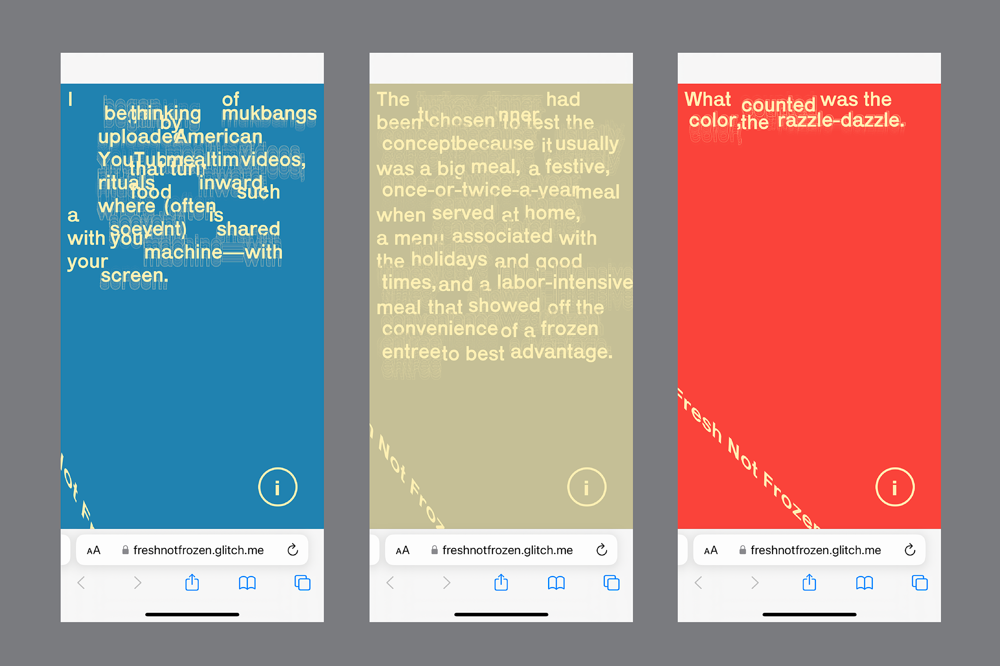

Overview
I am dedicated to textual practices*... (i) how we interact with & reinterpret books; and (ii) the gestures of reading and writing (with whatever stylus available) — whether as a design exercise, art form, technology, or medium for reflection.
My current dibble-dabbling focuses on affordances and prosthetics for reading and other book-based activities.
* Why book-based investigations / textual practices?
I am somewhat of a belletrist, a firm believer in the wonder and loveliness of cultivating personal relationships with the print media — 读物, literally translated as “reading objects” — that we hold close.
As a sighted and hearing person I am interested in the minutia of active reading: gestures from personal annotation & notetaking systems, how people regard their books, and our relationship to commonplace media. Reading aloud is also an important ritual I’d like to dig into more.
Bookmark (2025)
Discreet dogearing: a test for a humble bookmark that doubles as a reading light. Video recording available on Xwitter.
Materials: Adafruit conductive sewing thread, white LED, resistor, 3V battery on a roughly 2.5" x 3.25" piece of canvas.
This book you are holding is a junkyard (2020)

An adaptation of Jussi Parikka’s essay, “Malware as Operational Art: On the If/Then of Geopolitics and Tricksters,” from Het Nieuwe Instituut’s 2019 exhibition, Malware: Symptoms of Viral Infection. Full booklet’s scanned contents available as a PDF.
Materials: 3.5 x 6.5 in. newsprint booklet, hand sewn. Texture on inner folds from Zalgo “messy text” generator and generative graphics programmed with DrawBot.
Fresh Not Frozen (2022)

A mobile microsite gathering assorted texts, quotes, and scholarly analyses of the advent and legacy of the American TV dinner.
Materials: p5.js on generally mobile phone-sized surfaces.
Some texts on the iPhone (2022)
An art book containing various writings about and imagery of the iPhone to explore the device’s role in contemporary American society as status symbol, erotic object, spectacle of lightness, and luxury destroyed.
Materials: 3" × 6" × 0.12" acrylic pages, 8.5" × 11" × 0.75" wooden base, bolt, washer, and nut.
VectorTextPoetics (2025)
Three compositions that examine the nature of programming SVGs for plotting on the AxiDraw V3/A3 by Evil Mad Scientist. Plots I and II are my attempts at a quine — a program that represents its own code.
Plot I on white paper: What does it mean for the utilitarian-tinged space of a computer program to include personal inline comments about the poetics of this type of writing? After the initial plot in black ink, the composition was syntax highlighted to approximate my code editor’s interface. Video recording available on Vimeo.
Plot II on yellow paper: Live observation and letter written to the plotter; an homage to the “Dear Inky” series by JoAnn F. Weldon, gathered by Late Night Copies Press in the second series of Queer Materials.
Plot III on pink paper: Verso plot to test if optimized SVG paths could force the plotter in moving in a linear direction approximating handwriting. Video recording available on Vimeo.
Materials: 11" × 17" plots on paper.
Shape of Our Images (2025)
Continued study of how the vpype SVG optimization algorithm influences the physical taking-form of long-form text — here, Vilém Flusser’s “Our Images,” translated by Rodrigo Maltez Novaes — plotted on an HP7475A.
Materials: 5.5" × 8.5" plots on tracing paper.